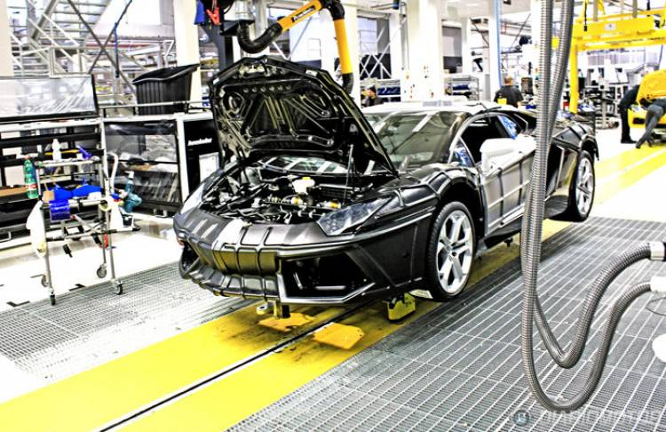

PRODUCCIÓN
Lamborghini ha batido un récord de producción en su historia, tanto de producto como en el plazo temporal para lograrlo, con sus dos modelos de referencia: el Aventador y el Huracan.
Por un lado, el Lamborghini Aventador ha llegado a las 7.000 unidades en tan sólo 6 años. La que ha logrado dicho hito es un S Roadster, presentado el pasado septiembre, y que tiene como destino Estados Unidos, en color Grigio Adamas.
Por su parte, el Huracan ha alcanzado las 9.000 unidades producidas, pero en tan sólo tres años. El modelo que ha llegado a la cifra ha sido un Performante en color Blue Nethuns con destino opuesto al Aventador, pues se irá a Dubai.
Estos hitos dejan algunas reflexiones. Por un lado, el éxito de dos modelos muy especialesque han mantenido a la marca de Sant’Agata en la cima de rendimiento y diseño. Pero por otro, el aumento de producción,
algo que entraba en los planes de la marca, supone una pérdida paulatina de exclusividad: a más modelos, menos especiales son.
En todo caso, el crecimiento de la producción es una buena noticia para una marca que ahora es rentable, pero que no debemos olvidar que pasó por momentos precarios hace un par de décadas, que a punto estuvieron de llevarla al colapso.

Ferruccio Lamborghini puso a punto un método simple pero eficaz para comprender inmediatamente el impacto de sus automóviles:
observaba atentamente las personas al borde de las carreteras que recorría. Si no se daban la vuelta para mirarle desencajando los ojos, el estilo no era lo suficientemente atractivo.
Porque los Lamborghini tenían que emocionar no solo a quien los conducía sino también a quien los miraba. Un concepto al que la Casa del Toro siempre se ha ajustado
y que con el tiempo ha sido desarrollado al mismo paso que la evolución general del estilo y el progreso tecnológico.

Desde su fundación, la marca Lamborghini ha establecido tendencias del diseño innovadoras en el mundo de los superdeportivos, realizando automóviles con una personalidad absolutamente inconfundible. Con la producción de las series Aventador y Huracán, Lamborghini ha puesto a punto una expresión innovadora de las formas. Las proporciones resueltas muestran tanto la potencia como la dinámica de que son capaces esos motores: bordes netos, líneas precisas y superficies limpias redundan en un diseño que ha sido reducido a lo esencial. La gestión purista de las líneas queda valorizada por el gran esmero por los detalles de los diseñadores de Sant’Agata Bolognese.


El «Centro Stile» fue creado en 2004 en vistas de constituir un departamento innovador para los creativos, capaz de combinar la cultura y el alma de la marca con la innovación y
la investigación continua de nuevas estéticas. Por esto el Centro Stile de Lamborghini se dedica a llevar la excelente tradición del diseño automovilístico italiano dentro de los procesos productivos del futuro,
sin tener que dirigirse a empresas externas.
Además, no es casualidad que el Centro Stile esté enlazado con el adyacente Departamento Técnico: de esta manera las ideas se concretan en muy poco tiempo.

VEHÍCULOS MAS PRODUCIDOS

|